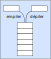

Structure de pile#
Une pile est une structure de données linéaire.
on accède uniquement au dernier élément ajouté; c’est le sommet de la pile.
tout nouvel élément est ajouté au sommet de la pile.
Cette structure de donnée est dite LIFO pour Last In First Out (dernier arrivé, premier sorti).
On représente souvent une pile de façon verticale comme une pile d’assiettes.
Pour accéder à un élément situé dans la pile, il est nécessaire de dépiler jusqu’à ce que l’élément voulu soit le sommet de la pile.
Tous les éléments dépilés sont perdus sauf si on les sauvegarde dans une structure de donnée adaptée comme un tableau ou une autre pile.
Note
La pile est utile dans différents types de problèmes:
algorithme d’un navigateur pour mémoriser les pages web visitées afin de revenir en arrière;
mémoriser les dernières actions pour les annuler ou les répéter (ctrl z, ctrl y);
algorithme pour parcourir certaines structures de données.
Interface d’une pile#
L’interface d’une pile se compose principalement des primitives suivantes :
Créer une pile vide, sans contenu;
Empiler une pile, c’est à dire ajouter un nouvel élément au sommet de la pile;
Dépiler une pile, c’est à dire renvoyer le sommet de la pile en le supprimant de la pile;
Vérifier si une pile est vide;
Implémentation d’une pile#
La structure de pile n’existe pas nativement dans le langage Python. Il faut écrire des fonctions qui réalisent l’interfac d’une pile. C’est ce qu’on appelle une implémentation.
L’implémentation d’une pile peut se réaliser de différentes manières en Python. Par contre, quelle que soit l’implémentation choisie, l’interface reste la seule définition de cette structure.
Les listes de python disposent de fonctions et de méthodes pour réaliser facilement l’interface d’une pile.
La création d’une pile se fait en créant une liste vide;
Empiler une valeur se fait avec la méthode
append;Dépiler une pile se fait avec la méthode
pop;Tester une pile vide se fait avec un test sur une liste vide.
Implémentation d'une pile
Note
On peut implémenter une pile en Python avec la programmation orienté objet en créant une classe Pile qui regroupe les différentes méthodes réalisant l’interface d’une pile.
Les implémentations d’une pile peuvent proposer d’autres fonctions comme :
la hauteur d’une pile (nombre d’éléments)
l’accès au sommet de la pile sans le dépiler